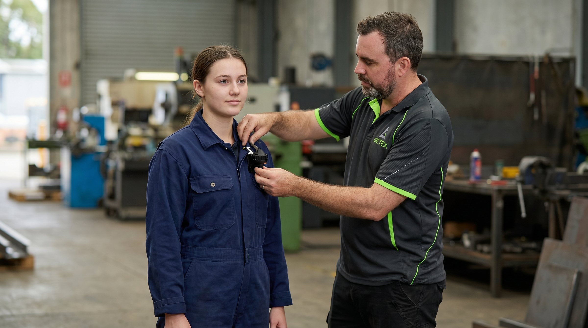
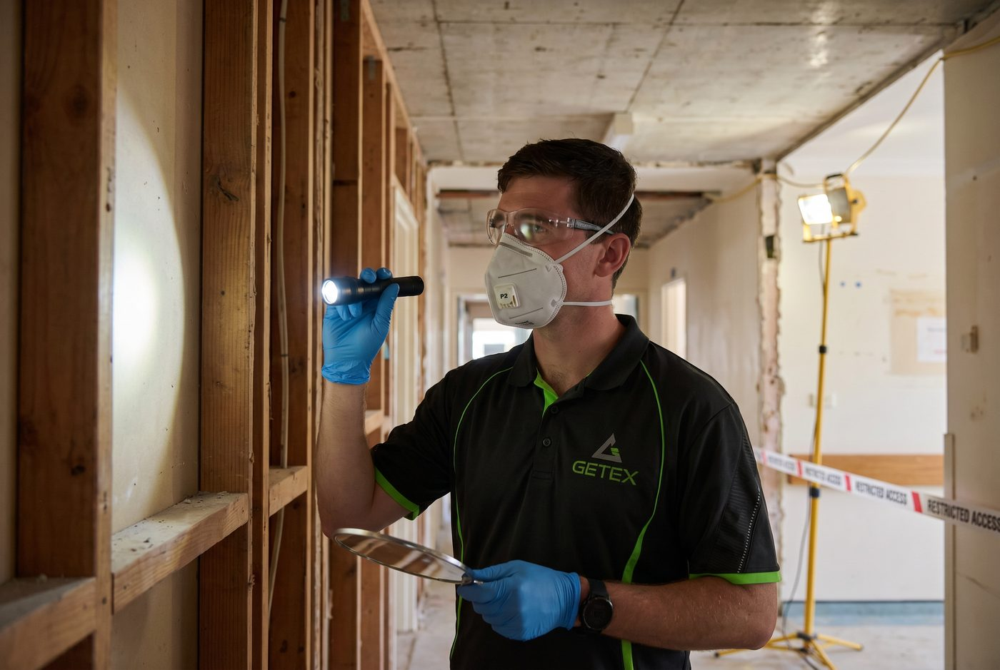
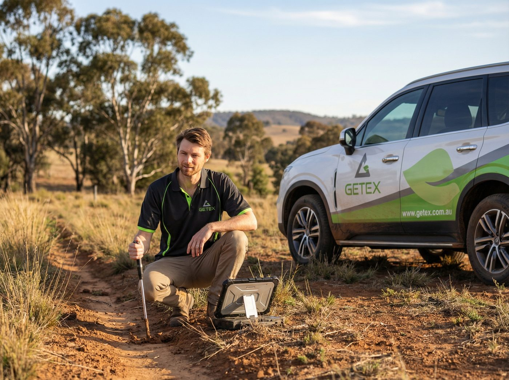
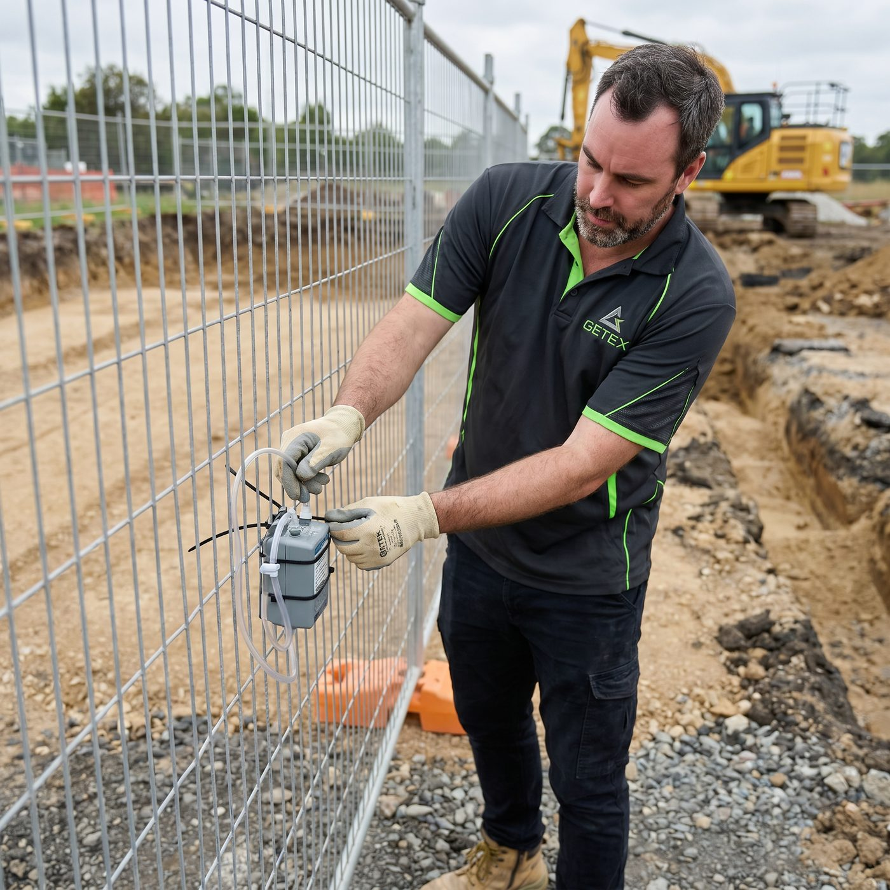
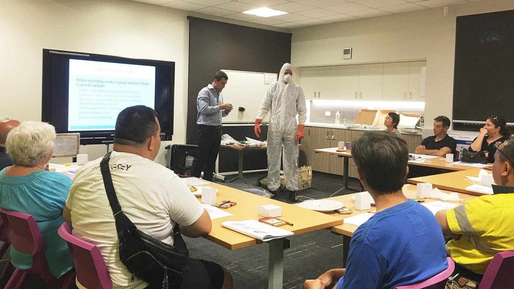

Getex holds over 20 years of expertise in hazardous materials, contaminated land and occupational hygiene across Sydney and New South Wales.
Asbestos surveys, air monitoring, clearance and hazardous materials management, delivered by Licensed Asbestos Assessors and NATA-accredited inspection surveyors.

Risk-based investigation, remediation and validation, including soil, groundwater and landfill gas assessment. Led by a Certified Environmental Practitioner (Site Contamination).

Exposure monitoring and air quality assessment across dust, silica, noise, lighting, fumes and contaminants. Our airborne contaminant monitoring is NATA-accredited.

Practical, on-site training tailored to staff, contractors or the public, across asbestos, hazardous materials, contaminated land and occupational hygiene.

Not sure what you need? Send us your project details
Discuss a project